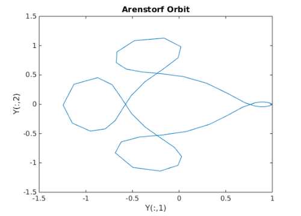
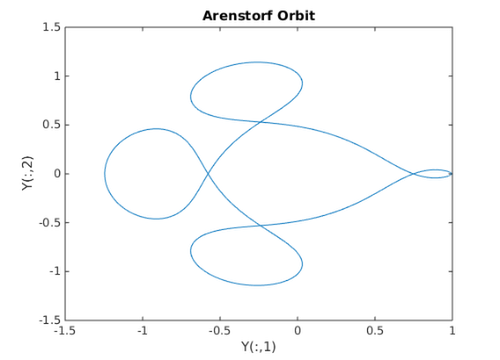

MATLODE_Example_ERK_TLM_Integrator
Up: Examples
Contents
For the following examples we will use Arenstorf Orbit as a toy problem to illustrate MATLODE_ERK_TLM_Integrator functionalities and features. To initially setup Brusselator, execute the MATLAB commands below to load our input parameters into our workspace.
Ode_Function = @arenstorfOrbit_Function; Ode_Jacobian = @arenstorfOrbit_Jacobian; Ode_YTLM = eye(4); Time_Interval = [ 0 17.0652166 ]; Y0 = [0.994; 0; 0; -2.00158510637908252240537862224];
Basic Functionality
Now that we have our model loaded in our workspace, we can perform a tangent linear explicit Runge-Kutta integration using MATLODE's prebuilt default settings. We note that a Jacobian and Y_TLM required and passed by MATLODE's option struct.
Options = MATLODE_OPTIONS('Jacobian',Ode_Jacobian,'Y_TLM',Ode_YTLM); [ ~, Y, Sens ] = MATLODE_ERK_TLM_Integrator(Ode_Function,Time_Interval,Y0,Options);
Printing out our results, we can analyze our model state at our final time.
disp('solution at Time_Interval(2)'); disp(Y(end,:)); disp('sensitivity at Time_Interval(2)'); disp(Sens);
solution at Time_Interval(2)
0.9894 -0.0081 -1.1139 -1.3474
sensitivity at Time_Interval(2)
1.0e+06 *
0.0139 -0.0043 0.0000 -0.0001
0.0082 -0.0023 0.0000 -0.0001
0.9444 -0.2974 0.0019 -0.0059
-1.4832 0.4407 -0.0028 0.0092
Advanced Features
To save the model state at each time step, one needs to initialize a MATLODE® option struct to store the fine tuning settings. The (key,value) pair associated for saving the model state at each time step is denoted as ('storeCheckpoint',true) or ('storeCheckpoint',false) depending on whether or not one wants to explicitly fine tune the integrator. In this case, the intermediary time step values are stored executing the command below.
Options = MATLODE_OPTIONS('storeCheckpoint',true,'Jacobian',Ode_Jacobian,'Y_TLM',Ode_YTLM);
To run MATLODE_ERK_FWD_Integrator using the fine tuning, one needs to insert the option struct into the integrator's fourth parameter position.
[ ~, Y, Sens ] = MATLODE_ERK_TLM_Integrator(Ode_Function,Time_Interval,Y0,Options);
Printing out our results, we can analyze our model state at our final time.
format long; disp('solution at Time_Interval(2)'); disp(Y(end,:)); disp('sensitivity at Time_Interval(2)'); disp(Sens);
solution at Time_Interval(2) Columns 1 through 3 0.989365398322643 -0.008118074065802 -1.113854858951780 Column 4 -1.347375530505811 sensitivity at Time_Interval(2) 1.0e+06 * Columns 1 through 3 0.013935972017972 -0.004266173814348 0.000027043915070 0.008179760777190 -0.002348774863634 0.000014891733314 0.944413955565086 -0.297449809968606 0.001885443761994 -1.483218412779525 0.440717675442452 -0.002793988009634 Column 4 -0.000086652911918 -0.000050959021233 -0.005867049814353 0.009230958322628
After plotting the results, one can now visualize the model.
figure(1); plot(Y(:,1),Y(:,2)); title('Arenstorf Orbit'); xlabel('Y(:,1)'); ylabel('Y(:,2)');
To obtain a smoother graphical repusentation, one can further tighten the error tolerances. To tighten the relative and abolute error tolerances, one fine tunes the option struct. Since the option struct is already in the workspace, one adds the relative and absolute (key,value) pair to the option struct. Then plot the results.
Options = MATLODE_OPTIONS(Options,'AbsTol',1e-12,'RelTol',1e-12); [ T, Y, Sens ] = MATLODE_ERK_TLM_Integrator(Ode_Function,Time_Interval,Y0,Options);
Printing out our results, we can analyze our model state at our final time.
format long; disp('solution at Time_Interval(2)'); disp(Y(end,:)); disp('sensitivity at Time_Interval(2)'); disp(Sens);
solution at Time_Interval(2) Columns 1 through 3 0.993999999922114 -0.000000079957168 -0.000012606226297 Column 4 -2.001585118385729 sensitivity at Time_Interval(2) 1.0e+06 * Columns 1 through 3 0.004141460842001 -0.001373436793264 0.000008712126201 0.013650742272501 -0.004049058454606 0.000025690749214 2.220300498658203 -0.660821033958704 0.004192788254230 0.644407485994680 -0.213758538185508 0.001355935230860 Column 4 -0.000025691247242 -0.000084980825140 -0.013820780308166 -0.003997499017851
After plotting the results, one can now visualize the model.
figure(2); plot(Y(:,1),Y(:,2)); title('Arenstorf Orbit'); xlabel('Y(:,1)'); ylabel('Y(:,2)');
Authored by Tony D'Augustine, Adrian Sandu, and Hong Zhang. Computational Science Laboratory, Virginia Tech. ©2015 Virginia Tech Intellectual Properties, Inc.